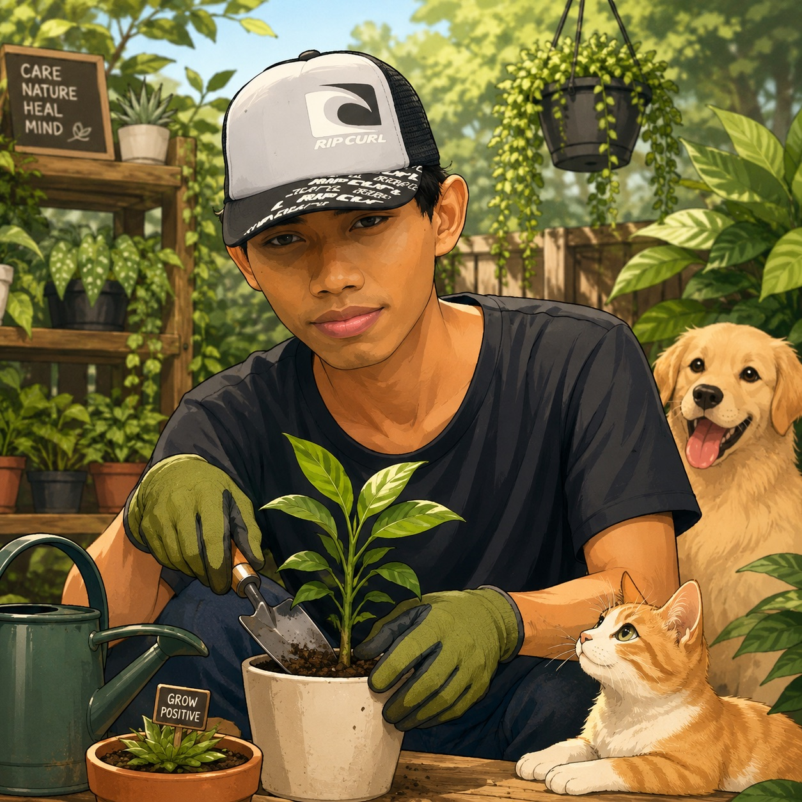

Jakarta kalau lagi panas, sumpah, rasanya kayak lagi di dalam oven. Apalagi di daerah Ciracas yang padat begini. AC mungkin jadi solusi instan bagi sebagian orang, tapi buat gw di "Bunker Opanowski", solusinya harus lebih cerdas, lebih produktif, dan pastinya lebih low cost.

"Daripada beli AC mahal, mending gercep bikin kebun sendiri! 🌿"
Filosofi "Biar Nggak Rapi, yang Penting Juoss"
Banyak "suhu" anggur atau pakar tanaman yang bilang kalau menanam itu harus rapi, media tanam harus steril, dan satu pot hanya boleh satu jenis pohon. Tapi di lahan yang luasnya terbatas ini, prinsip gw cuma satu: Ketahanan Pangan. Estetika itu urusan nanti, yang penting output-nya nyata untuk gw dan Nyokap di rumah.
Produktivitas > Estetika. Kalau bisa dimakan, ditanam. Kalau bisa jadi peneduh, dipeluk. Nggak perlu rapi, yang penting juoss!
Lihat saja kebun gw sekarang. Ada pare hutan (pare ayam) yang merambat liar sampai ke pohon anggur Tamaki, Heliodor, dan Moondrop. Ada juga labu air dan timun yang saling "sikut" di para-para. Bagi orang awam, mungkin kelihatan berantakan. Tapi buat gw, ini adalah simbiosis. Pare-pare kecil itu adalah peneduh alami atau bio-canopy sementara sambil menunggu batang anggur gw benar-benar besar dan siap pruning pembuahan.

"Pernah ditegur tetangga: 'Itu kebun apa hutan?' Ya jawab aja: 'Hutan pangan, pak!' 😂"
Taktik Angkat Konblok: Akar Langsung ke Bumi
Satu rahasia kenapa tanaman di sini bisa tetap vigur meski cuaca lagi gila-gilanya adalah karena gw nggak cuma mengandalkan pot. Halaman rumah gw memang full konblok dan sebagian plesteran, tapi gw sengaja membongkar beberapa titik konblok tersebut. Gw gali, dan gw tanam langsung ke bumi.
Dengan cara ini, akar tanaman punya akses ke kelembapan alami di bawah tanah yang nggak bakal didapat kalau cuma di pot plastik. Konblok yang tersisa justru berfungsi melindungi tanah dari penguapan berlebih. Hasilnya? Tanaman lebih adem, dan penggunaan air jadi lebih irit. Nutrisinya pun organik, hasil olahan dari mini farm (kelinci, ayam, puyuh) yang gw kelola sendiri. Air lindi benar-benar jadi 'jamu' sakti di sini.

"Air lindi dari kotoran kelinci+ayam? Ngangsu batang pisang aja jadi item! 🔥"

Manajemen Area Multifungsi
Di bawah rimbunnya pare dan anggur ini, hidup tetap berjalan. Area kebun ini juga merangkap jadi bengkel service motor dan tempat cuci motor. Vario merah dan Beat Karbu 2009 kesayangan sering nongkrong di sini. Supaya lingkungan tetap terjaga, gw buatkan saluran air khusus langsung ke got. Jadi, sisa air sabun pas nyuci motor nggak bakal merusak pH tanah tempat anggur gw tumbuh. Tanaman tetap dapat nutrisi enak, motor tetap bersih, dan gw bisa service motor tanpa kepanasan.
Kebun + bengkel + cucian motor + jemuran. Asal saluran air dipisah, semua happy. Nggak ada tuh drama pH tanah rusak karena sabun cuci motor.
Tentu aja, matahari nggak boleh ditutup total. Gw tetap sisakan area untuk jemuran portable dan tempat gw berjemur pagi. Bagaimanapun, manusia butuh vitamin D, dan jemuran butuh panas alami supaya nggak bau apek. Pembagian 'jatah surya' ini penting biar ekosistem di halaman tetap seimbang.

"Seprei wangi + sayur petik pagi + vitamin D gratis = combo hemat bahagia 🌞"
📌 Penutup

"Hasil petikan langsung bisa tumis atau cuci mulut — lebih mewah dari mall manapun di Jakarta. 😎"
Jadi, buat kalian yang tinggal di Jakarta dan merasa rumahnya kayak neraka bocor, coba deh angkat satu-dua konblok di halaman. Tanam apa saja yang bisa dimakan. Biarpun modal minim dan barang bekas semua, kalau hasilnya bisa dipetik buat tumisan atau cuci mulut, rasanya lebih mewah dari mall manapun di Jakarta.
Urban farming di lahan sempit itu mungkin, asal lo mau gerak, mau eksperimen, dan nggak gengsi sama penampilan kebun yang 'berantakan'. Yang penting juoss dan produktif!
Tetap autodidak, tetap berkah! 🏴Lo juga punya trik urban farming low cost? Share di kolom komen! 🌱